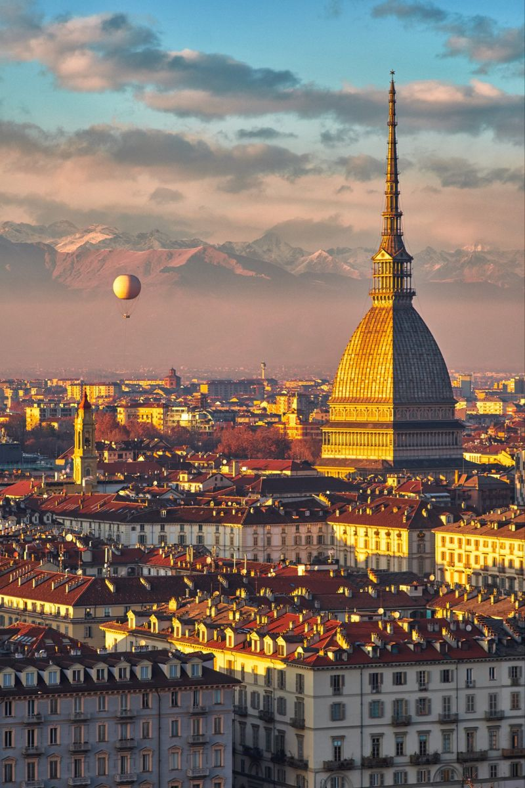
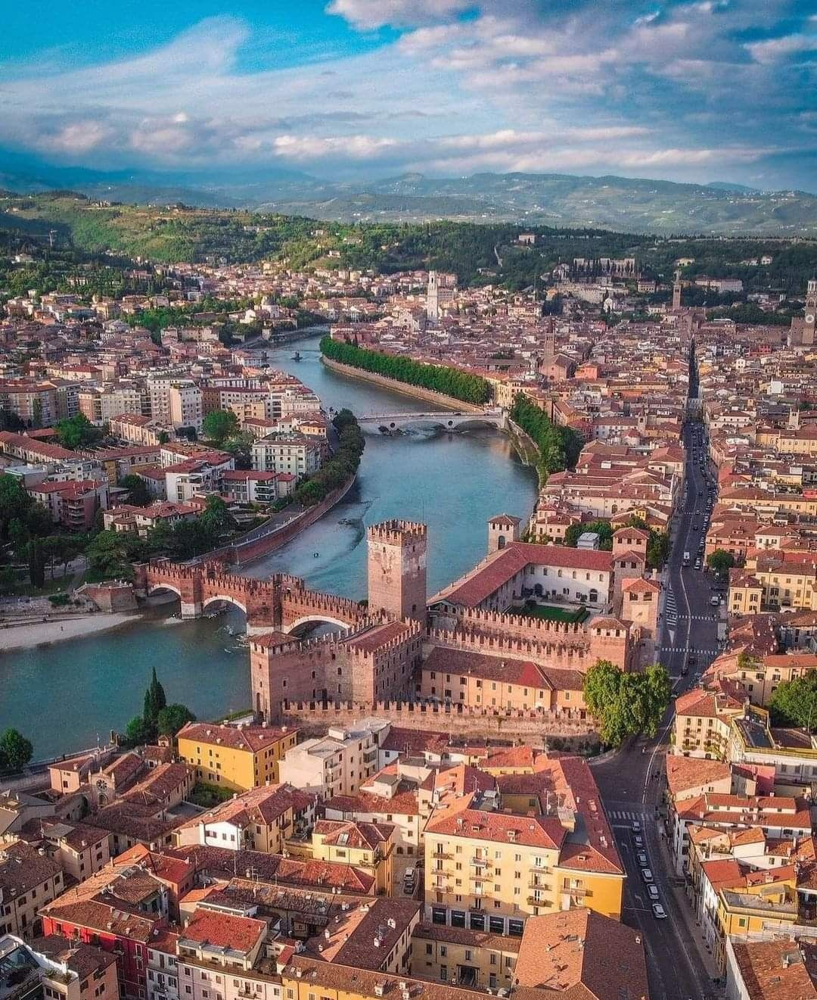
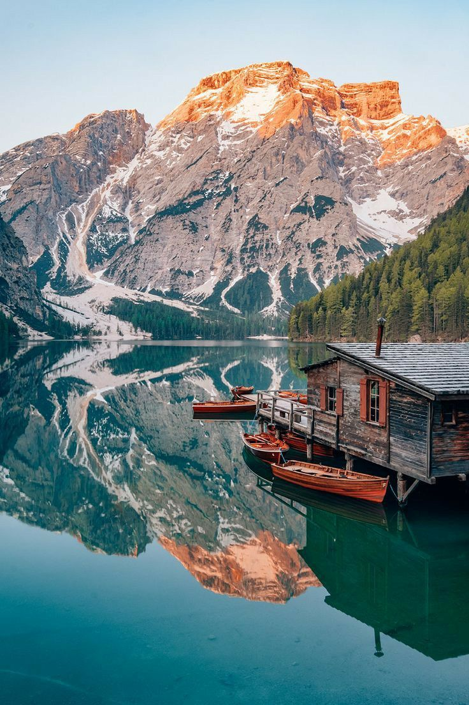
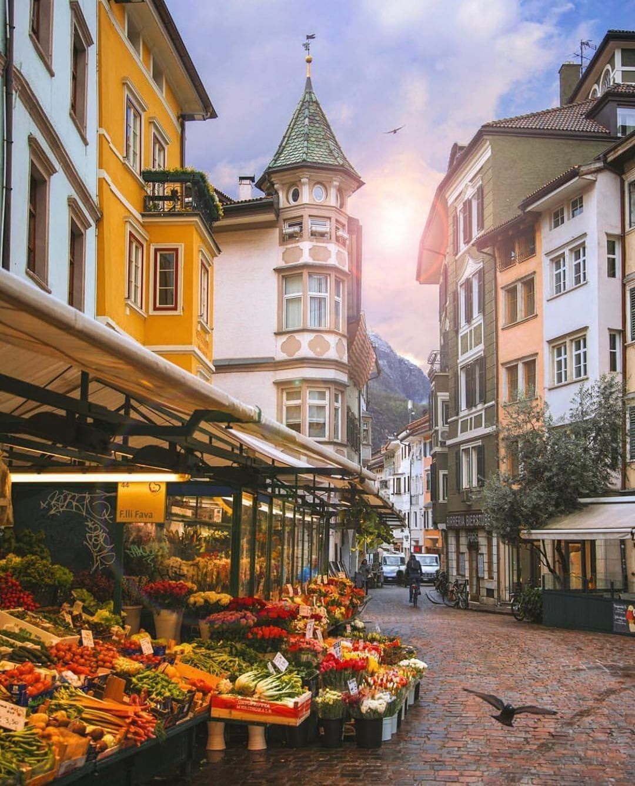
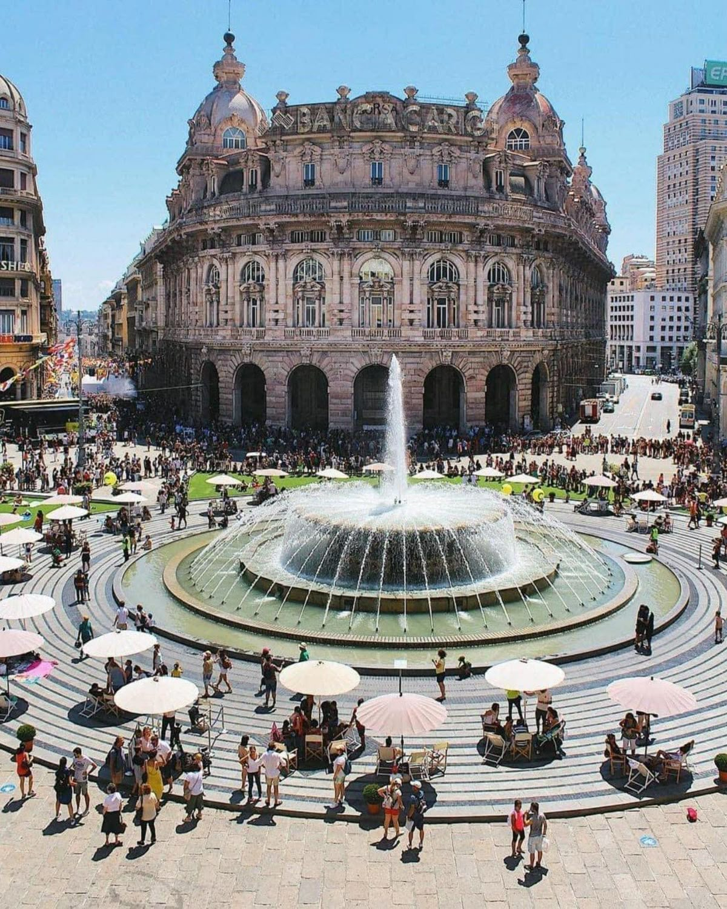
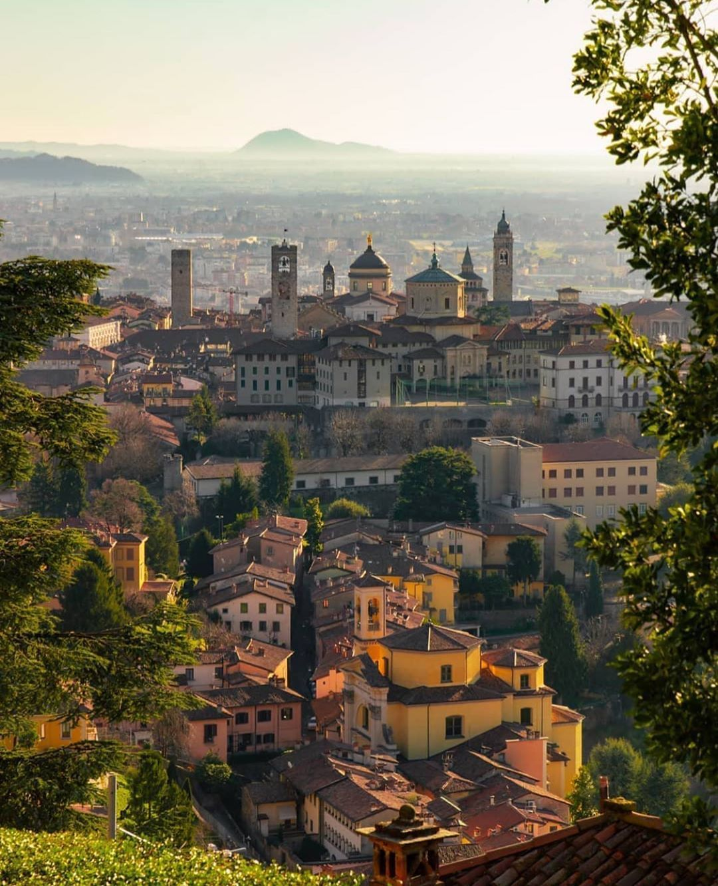

Italia de Nord
Italia de Nord este o lume a eleganței și rafinamentului, unde istoria întâlnește modernitatea în armonie perfectă. Aici, munții semeți se întâlnesc cu lacuri cristaline, iar peisajele naturale sunt completate de orașe vibrante, pline de artă, cultură și tradiții. Atmosfera este dominată de stilul sofisticat, gastronomia rafinată și peisajele pitorești care îți încântă privirea la fiecare pas.
Milano - Un centru vibrant unde moda și arhitectura își dau mâna, oferind o experiență urbană plină de energie și eleganță.
Torino - Un oraș cu aer nobil, unde palate istorice și colecții muzeale îți povestesc despre un trecut glorios.
Verona - Oraș romantic și plin de farmec, cu ruine antice care încă păstrează misterul legendelor de dragoste.

Lacul Como - Un refugiu idilic, cu ape limpezi și peisaje montane ce par pictate, perfect pentru relaxare și contemplare.

Cinque Terre - Un colț de coastă plin de culoare și viață, cu cărări pitorești ce leagă sate ce par suspendate între cer și mare..
Dolomiții - Munți falnici cu vârfuri ascuțite, un adevărat teren de joacă pentru cei pasionați de natură și aventură.
Bolzano - Un oraș unde influențele culturale se împletesc natural, amplasat în inima munților, cu aer proaspăt și istorie bogată.
Genova - Port vechi cu o rețea de străzi fascinante, ce reflectă spiritul maritim și tradițiile mediteraneene.
Bergamo - Un oraș încântător, cu un centru istoric ce se păstrează neatins, înconjurat de ziduri ce spun povești din alte vremuri.